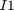
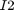
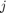
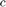
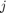
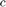
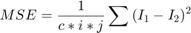
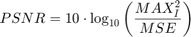
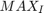
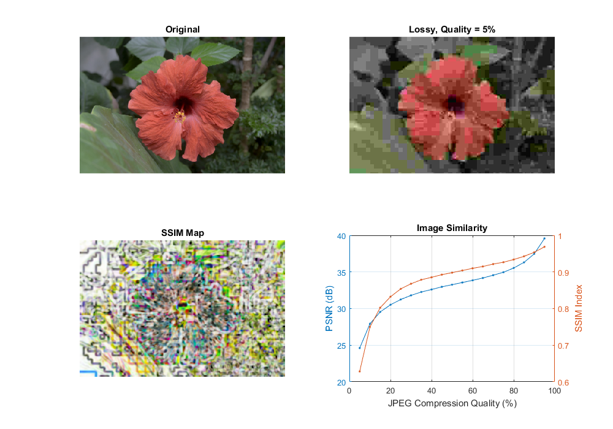

Similarity measurement (PSNR and SSIM)
Image similarity under lossy compression.
Sources:
Contents
PSNR
We want to check just how imperceptible our compression operation went, therefore we need a system to check the similarity
or differences. The most common algorithm used for this is the PSNR (aka Peak signal-to-noise ratio). The simplest definition of this starts out from the mean squad error. Let there be two images:  and ; with a two dimensional size  and , composed of  number of channels.
and , composed of  number of channels.

Then the PSNR is expressed as:

Here the  is the maximum valid value for a pixel. In case of the simple single byte image per pixel per channel this is 255. When two images are the same the MSE will give zero, resulting in an invalid divide by zero operation in the PSNR formula. In this case the PSNR is undefined and as we'll need to handle this case separately. The transition to a logarithmic scale is made because the pixel values have a very wide dynamic range.
Typically result values are anywhere between 30 and 50 for compression, where higher is better. If the images significantly differ you'll get much lower ones like 15 and so. This similarity check is easy and fast to calculate, however in practice it may turn out somewhat inconsistent with human eye perception. The structural similarity algorithm aims to correct this.
SSIM
Describing the methods goes well beyond the purpose of this tutorial. For that I invite you to read the article introducing it. Nevertheless, you can get a good image of it by looking at the implementation below.
SSIM is described more in-depth in the following article:
Z. Wang, A. C. Bovik, H. R. Sheikh and E. P. Simoncelli, "Image quality assessment: From error visibility to structural similarity" IEEE Transactions on Image Processing, vol. 13, no. 4, pp. 600-612, Apr. 2004
This will return a similarity index averaged over all channels of the image. This value is between zero and one, where one corresponds to perfect fit. Unfortunately, the many Gaussian blurring is quite costly, so while the PSNR may work in a real-time like environment (24 frame per second) this will take significantly more than to accomplish similar performance results.
Code
Therefore, the source code presented below will perform the PSNR measurement and the SSIM. For visualization purpose we show both images with corresponding PSNR and MSSIM values.
function image_similarity_demo(fname) % reference image if nargin < 1 fname = fullfile(mexopencv.root(), 'test', 'test1.png'); end A = cv.imread(fname, 'ReduceScale',2); figure('Position',[100 100 1000 700]); subplot(221), imshow(A), title('Original') % compress with decreasing quality qual = 95:-5:5; vals = zeros(numel(qual), 3); for i=1:numel(qual) % lossy compression if true buf = cv.imencode('.jpg', A, 'JpegQuality',qual(i)); else buf = cv.imencode('.webp', A, 'WebpQuality',qual(i)); end B = cv.imdecode(buf); vals(i,3) = numel(buf); % compute similarity vals(i,1) = cv_psnr(A, B); [vals(i,2), map] = cv_ssim(A, B); % show result subplot(222), imshow(B) title(sprintf('Lossy, Quality = %d%%',qual(i))) subplot(223), imshow(map), title('SSIM Map') drawnow; end % plot similarities subplot(224) [ax, h1, h2] = plotyy(qual, vals(:,1), qual, vals(:,2)); set([h1 h2], 'Marker', '.') title('Image Similarity') xlabel('JPEG Compression Quality (%)') ylabel(ax(1), 'PSNR (dB)') ylabel(ax(2), 'SSIM Index') grid on if ~mexopencv.isOctave() t = array2table([qual(:), vals], ... 'VariableNames',{'Quality', 'PSNR', 'SSIM', 'Bytes'}); disp(t) end end function val = cv_psnr(img1, img2) %CV_PSNR Peak Signal-to-Noise Ratio % % See also: psnr, cv.PSNR % % validate arguments assert(isa(img1,'uint8') && isa(img2,'uint8'), 'images must be 8-bit'); assert(isequal(size(img1), size(img2)), 'images must have the same size'); % mean squared error se = double(cv.absdiff(img1, img2)).^2; mse = mean(se(:)); % PSNR (in dB) val = 10.0 * log10((255*255) / mse); if ~isfinite(val) val = 0; % division by zero MSE end end function [val, map] = cv_ssim(img1, img2) %CV_SSIM Structural Similarity Index % % See also: ssim % % validate arguments assert(isa(img1,'uint8') && isa(img2,'uint8'), 'images must be 8-bit'); assert(isequal(size(img1), size(img2)), 'images must have the same size'); % constants to stabilize the division with weak denominator k1 = 0.01; k2 = 0.03; L = 2^8 - 1; % 8-bit dynamic range of pixel-values C1 = (k1*L)^2; C2 = (k2*L)^2; % filtering options opts = {'KSize',[11 11], 'SigmaX',1.5, 'SigmaY',1.5}; % work in floating-point precision I1 = double(img1); I2 = double(img2); % mean mu1 = cv.GaussianBlur(I1, opts{:}); mu2 = cv.GaussianBlur(I2, opts{:}); % variance sigma1_2 = cv.GaussianBlur(I1.^2, opts{:}) - mu1.^2; sigma2_2 = cv.GaussianBlur(I2.^2, opts{:}) - mu2.^2; % covariance sigma12 = cv.GaussianBlur(I1.*I2, opts{:}) - mu1.*mu2; % SSIM index map = ((2 * mu1.*mu2 + C1) .* (2 * sigma12 + C2)) ./ ... ((mu1.^2 + mu2.^2 + C1) .* (sigma1_2 + sigma2_2 + C2)); val = mean(map(:)); end
Quality PSNR SSIM Bytes
_______ ______ _______ _____
95 39.578 0.96866 39532
90 37.469 0.95371 27081
85 36.3 0.94262 21329
80 35.541 0.9339 18149
75 34.956 0.92656 15901
70 34.557 0.92153 14450
65 34.176 0.91499 13234
60 33.855 0.90994 12205
55 33.56 0.90393 11374
50 33.261 0.89813 10737
45 32.97 0.8926 10121
40 32.603 0.88531 9377
35 32.264 0.87868 8727
30 31.802 0.86771 7944
25 31.243 0.85372 7127
20 30.514 0.83233 6231
15 29.542 0.80236 5294
10 27.923 0.74988 4191
5 24.61 0.6283 3088
